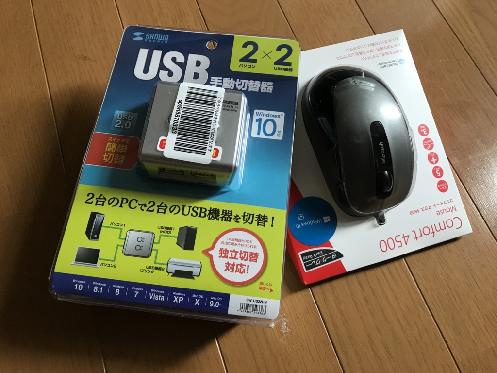
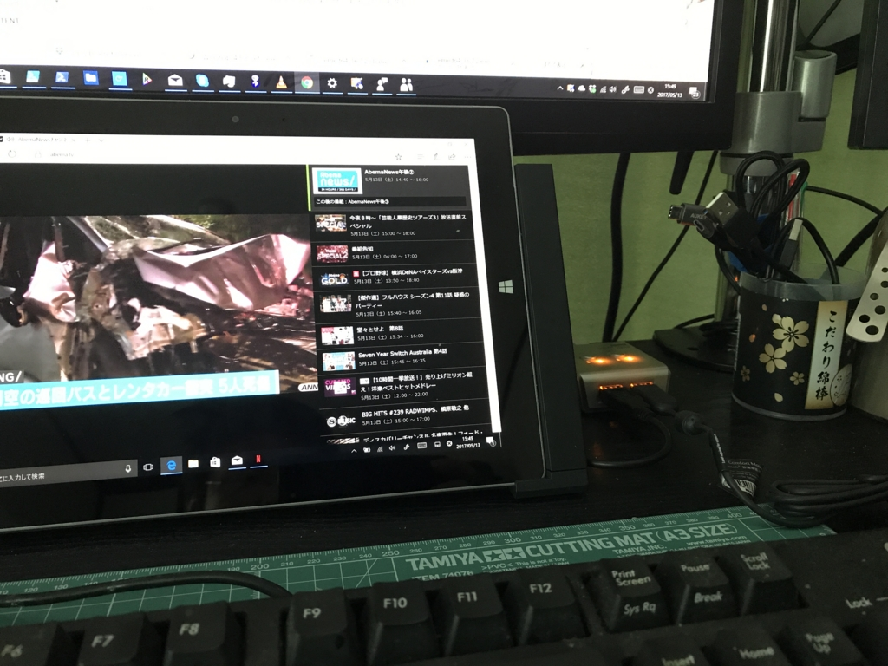
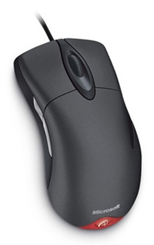

マウス＆キーボードを 2 台の PC で共有 ～ USB 切り替え機を購入したった
執筆日時：

この前 Surface 3 のドックを買ったのだけど、ドッキング中は TypeCover が使えないのがちょっと面倒。
というわけで、USB 切り替え機を導入してみた。デスクトップ PC とドッキング中の Surface でマウス＆キーボードを共用できるぜー。

- 出版社/メーカー: UGREEN GROUP LIMITED
- メディア: エレクトロニクス
- この商品を含むブログを見る
最初はこれがいいかなーと思ったのだけど、どうやら PC は 4 台接続できる（2 台版もある）けど、USB 機器は 1 台しか繋げないみたい。
 SW-US22HN")
サンワサプライ USB2.0ハブ付き手動切替器(2回路) SW-US22HN
- 出版社/メーカー: サンワサプライ
- 発売日: 2015/11/01
- メディア: Personal Computers
- この商品を含むブログを見る
どうせならマウスも繋ぎたいかなと思った（Bluetooth マウスを愛用してるけど、たまに接続が切れるのがストレス）ので、結局、これにした。2 PC ⇔ 2 USB 機器を切り替えられる。

すんなり動いた……けど、
- どうにもダサい
- ゴム足ぐらい付けてくれないと、本体が軽くてマウスの移動でズレそう
- ケーブルが 1 本しかついてない（ショボいのをつけるぐらいなら、2 本付けるか、いっそのことないほうがいい）
みたいな。エレコムってどうにもダサいよね……まともなデザイナーのヒトを入れれば、もう少し売れそうなのに。でも、
- 接続先を示すインジケーターは左右色が違っていて分かりやすい
- なにより、ちゃんと動く
のはいいかなって思った。ぜいたくを言えば、2 系統同時に切り替えるボタンがあってもよかったけど、まぁ、無駄に高くなるかもしれないし、なくてもいいか。

マイクロソフト マウス 有線/USB接続/5ボタン/人間工学デザイン グレー Comfort Mouse 4500 4FD-00029
- 出版社/メーカー: マイクロソフト
- 発売日: 2012/10/12
- メディア: Personal Computers
- この商品を含むブログを見る
ちなみに、有線マウスは信頼のマイクロソフト製を選んだ――が、これが大失敗。ボタンはキシキシいうわ、スクロールはふにゃふにゃで、指を話した時に戻ったりするわ、往年の品質はどこへやらって感じ。これは今度、家電量販店で試して買いなおそうと思う。

これを作り直してほしいんじゃぁ……。復刻してくれたら5個ぐらい予備を買うのに。